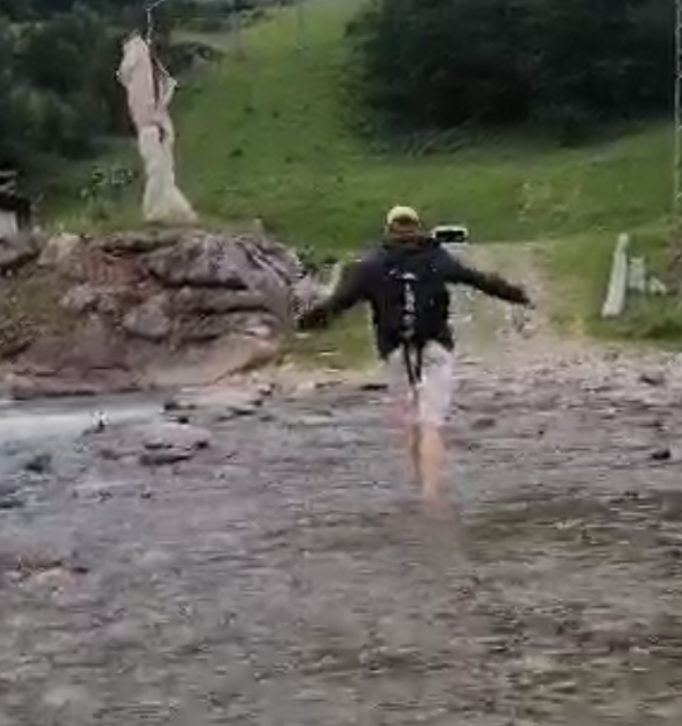

Attilio Gualandi
DevOps Engineer

Programming languages:
• Python
• SQL
• Java
Other languages:
• Matlab
• HTML
• CSS
Experience with:
• Pandas (Keras)
• TensorFlow
• PyTorch
• Git
Spoken Languages:
• Italian: Mother tongue
• English: Proficient
• French: Basic
Passions:
• Code (Keras)
• Artificial Intelligence
• NLU
• Basket
• Space Exploration
Other Experiences
• Entrepreneurship Club
• IT Consultancy for ENOI S.P.A
• Market Analysis for the start-up libraway
• Winner of concourse “The time of history”
• Scout